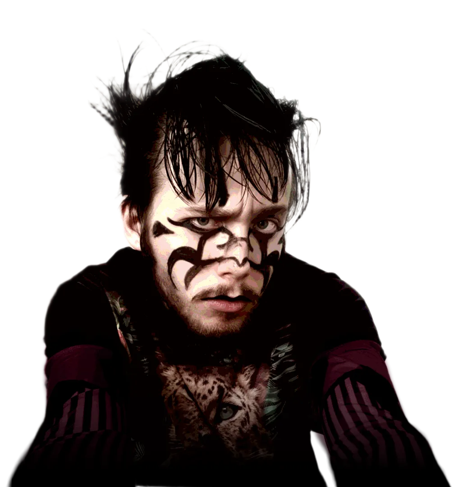
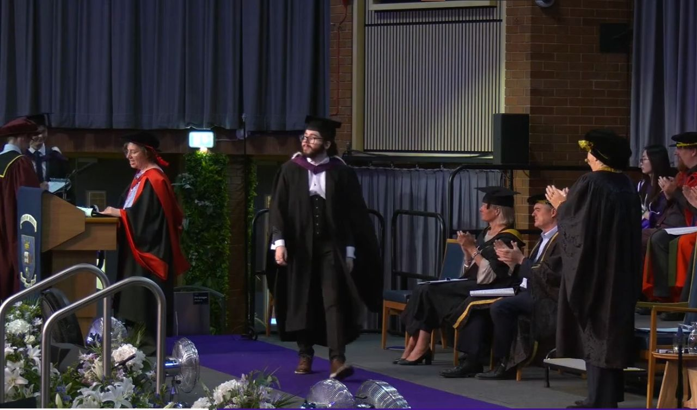
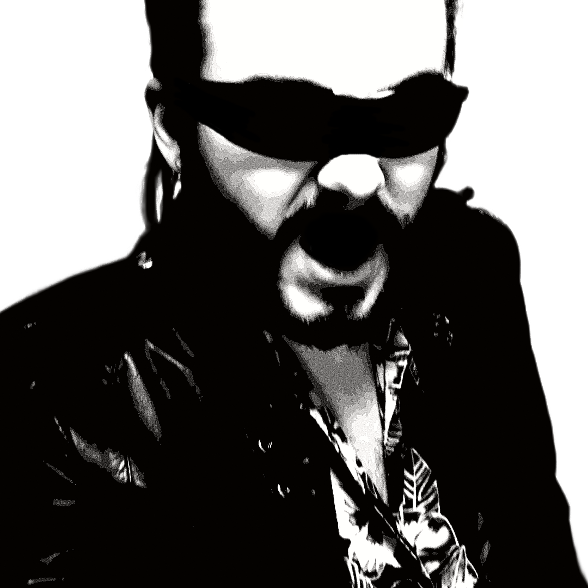

PIJUS LUCINSKAS™
All my projects and other stuff :-).

ME!
A LITTLE MORE ABOUT ME
"FORTUNE FAVOURS THE
BOLD."
Hi, I'm Pijus Lucinskas. I'm a UK-based junior Java and full-stack developer (BSc Computer Science, Sheffield, 2:1). I build well-tested Spring Boot and REST applications while making games and music on the side. Feel free to contact me (lucinskas.pijus@gmail.com) or connect with me (https://www.linkedin.com/in/pijus-lucinskas/). I have very keen interest in helping modernise and reengineer existing Java codebases with additional interest in testing and test-driven development (TDD) especially regarding automated testing and CI/CD.
This quote is a message that my English teacher left with me when I finished Sixth Form. Ever since then, I've tried my best to be as bold as I can in everything that I do even if I feel like I'm playing a character sometimes. As a result, I like places where I can be creative and make something that has a lasting impact. I channel a lot of this passion in full-stack Java development, my village sim, music and the visual arts!
I keep this quote in mind whenever I feel lost or need motivation, it's helped me more than once in life.
SEE THE PORTFOLIO↘
On stage about to receive my graduation certificate!MORE TO BE ADDED AS I GROW!
THE PORTFOLIO
FILES FOUND: 004
STATUS: IN PROGRESS
Computer
Science
LOGIC / CODE / SYSTEMS
OPEN FILE ↗ PIJUS_LUCINSKAS / FILE_003Music
& Sound
MUSIC / SOUNDTRACKS / OTHERS
OPEN FILE ↗ PIJUS_LUCINSKAS / FILE_004Game
Development
WORLDS / MECHANICS / BUILDS
OPEN FILE ↗ PIJUS_LUCINSKAS / FILE_005University
+ Side Quests
RESEARCH / LIFE / ODDITIES
OPEN FILE ↗UNDER THE BONNET / FILE_002
COMPUTER SCIENCE
Full-Stack Java/Python developer with University experience in reengineering an inherited open-source codebase, delivering web applications and more. Focus on developing RESTful applications, APIs, CI/CD, Spring Boot, JPA, MySQL and similar frameworks. Familiar with gradle projects and agile development. Keen curiosity in developing further skills into Azure and React.js. Happy and curious for new technologies. Also have experience in full test development (and TDD) with experience in Gherkin (for BDD), GitHub Actions, developing and delivering unit/integration/system tests.
REENGINEERING HTTPie
Identified code smells via static and dynamic analysis, identifying smells and fixing them. Reducing overall code bloat, tightly coupled classes and maintaining the Single Responsibility Principle across classes. Resulted in reduced complexity across Sessions and Argparser handling and proper delegation of responsibilities.
SOCIAL MEDIA WEBSITE in JAVA SPRING
Solo developing a social media website as a faithful recreation of the LifeInvader website as seen in GTA V. Currently a work in progress and does not have any active hosting due to copyright. The website aims to recreate an entire social media platform and demonstrate my CSS/HTML capabilities. Teaching me the fundamentals regarding a more commercially-viable Spring-based RESTful application and serves as a learning tool and playground for the technologies.
PYCUFE
A Pythonic prototype implementation of the Ciphertext-Updatable Functional Encryption scheme by Cini et al. implementing trapdoor and lattice sampling, gadget matrix math and the full public/secret key encryption scheme. This project developed my cybersecurity skills and challenged me to learn the fundamentals and apply a cutting-edge scheme in a coding environment (Sage) that I was not familiar with. While there was certain challenge in understand the mathematics behind the scheme and implementing correct parameters, I managed to deliver a prototype that works given certain parameters and assess performance and scalability of the project while contributing to the sphere of FE. A challenge to overcome would be to design better parameter handling and ensure error does not accumulate with higher parameters and to make it completely secure under the scheme provided.
WEB-BASED KANBAN BOARD WITH API INTEGRATION
Developed a Minimum Viable Product for a web-based Kanban board with external API integration (with an existing business API). Managed the transcript uploads, handling and JSON response and request schema for the project. Also managed communication between client and team. Delivered (as part of a team) an web-based Kanban board that took transcribed meeting notes, fed into the business API and returned story card and Kanban changes, streamlining the meeting to Kanban process. Delivered this project two weeks ahead of schedule. Code cannot be shown due to confidentiality however, snippets are available upon request!
WEB DASHBOARD FOR BRASS BAND
Developed a web dashboard as part of University coursework for a brass band looking to move from paper-based to web-based information storage/retrieval. Delivered a dashboard showing active loans, tracklists and upcoming performances. Managed varying account hierarchies via Spring Security (i.e., admin, parent, child). I developed the child account and parent account functionality and managed the bulk of testing across unit, integration with database and system testing. I learnt my love for testing from this project! Managed to deliver the web application as required with 97% test coverage.
PIJUS_LUCINSKAS / FILE_003
MUSIC & SOUND
My game's soundtrack and other music I'm working on right now!
YzGuy
A song heavily inspired by YOUNG POSSE's YSSR. An homage to that track and my attempt at more maximalist music production!
PIJUS_LUCINSKAS / FILE_004
GAME DEVELOPMENT
What I'm working on in game development right now! So far I'm only working on one game currently but have plans to make some more in different programming languages.
A Kingdom for BLOXikins
A game developed in the popular game engine Roblox using a modified variant of the LUA programming language. A cute and cosy village simulator involving resource and route management, building and managing relationships among BLOXikins. The game is heavily inspired by A Kingdom for Keflings. A dev log will be made soon that details the progress and bugfixes!
PIJUS_LUCINSKAS / FILE_005
UNIVERSITY + MORE
The University of Sheffield is what made me who I am today. I graduated with a BSc in Computer Science for the 2026 graduation cohort. Its this university that taught me how to be confident in myself, how to work as part of a team and solidifed my love and passion for full-stack development. I have so much to say and not enough words to describe my time at this place.
There were multiple reasons that made me decide on going. Firstly, I had never been the most social person in the room. Whenever I was introduced to new people, I would often overthink social scenarios and assume the worst. University helped me gain the confidence I needed to approach these people and put me so far out of my comfort zone. It also made me realise how much I care about the people around me. With university, its easy to imagine yourself vs the world. University shifted this mindset and suddenly I found the most profound happiness when people around me succeeded, when teams that I was a part of found synergy and delivered something exceptional, when the graduation finally came around and all the people I grew up with were now professional adults. The same adults now working the jobs they only dreamt of working, something about this profoundly warms the heart in ways words cannot express.

END OF FILES
MAKE
SOME NOISE.
Thank you for reading through my portfolio! Got a question or wanna reach out?
GET IN TOUCH ↗